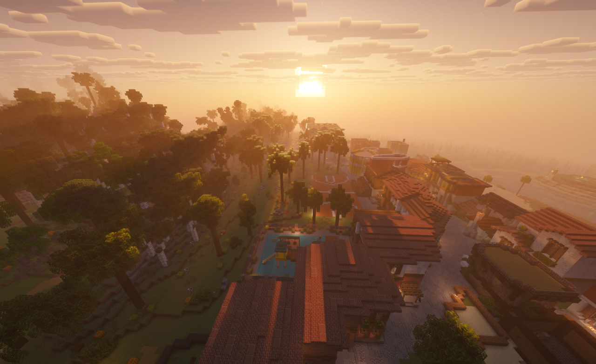
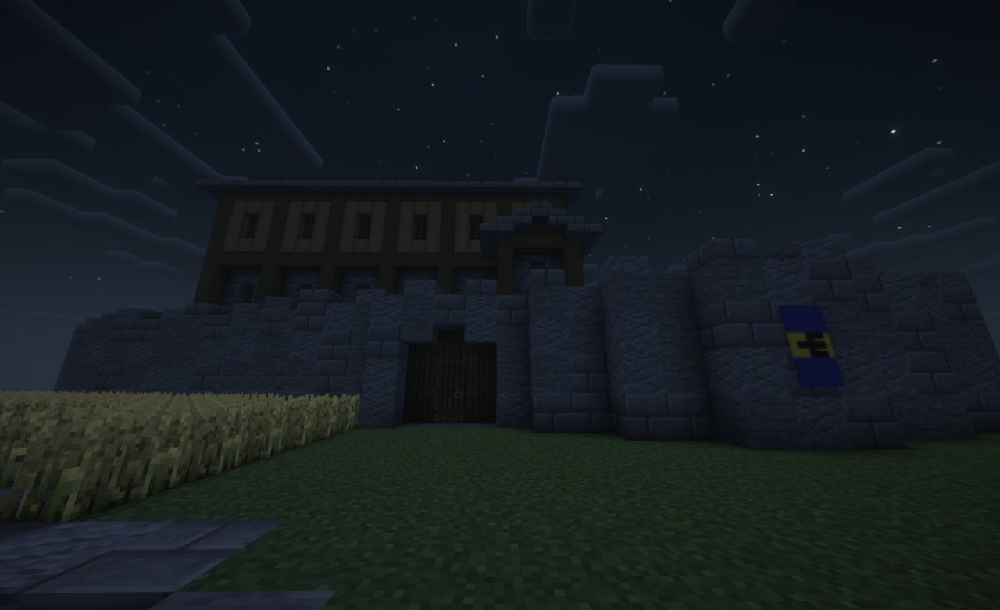

Caribbean Coast
Maicao ueq_
Capital claim on the water. Shops above ground, the mall below, and the treasury that pays out grants.
See residents →.png)
DiplomaticaMC · Reino de Colombia
Maicao on the coast. Salento inland like a coffee town. Tegucigalpa when Zaity1 brought Central America in. Built by people who log on — this isn't a lore wiki.
Checking live data…
Seat of the Crown
The main claim sits on the water. Streets and façades up top; under them, the mall — shops, chests, and the gold that pays town grants. A Caribbean capital built to be lived in, not just looked at.

Lit windows, colour on every façade, and the square people actually use. Cartagena energy on a Minecraft budget — not a warehouse grid.
Down the stairs: player shops and storage. Rare gear, daily trade, and the chest economy that funds new town grants upstairs.


Where the flag flies
Each claim has a job. These are the ones worth teleporting to first.
Capital claim on the water. Shops above ground, the mall below, and the treasury that pays out grants.
See residents → Colombia
Colombia
Bright façades, timber trim, wax-palm country energy. Built to be looked at — screenshot bait on purpose.
See residents →
Central America
Its own country before it came under Colombia. Still the anchor on the isthmus — the claim that makes Central America real on the map.
See residents → Caribbean
Caribbean
An island port in colonial style — the Caribbean side of the Empire doing what the real Bahamas does.
See residents → Colombia
Colombia
Hillside builds in the Aburrá Valley. Where the Prime Minister actually lives, so policy meets terrain.
See residents →
ColombiaColourful lakeside town. Small population, high charm — the kind of place people visit and don't leave.
See residents →Who runs things
A crown that shows up and ministers elected by the towns — not a list of titles, a list of jobs being done.

King of Colombia
Founded the Empire and still plays from Maicao. The reason there's a coast to defend.

Prime Minister of Colombia
Runs day-to-day government between the Andean towns. Handles what the King doesn't have to.

King of Central America
Holds the southern half of the Empire together from Puerto Lempira, on the Caribbean isthmus.

Prime Minister of Central America
Brought Tegucigalpa into the Empire and kept it the busiest capital outside Maicao.

Minister of Interior
Elected. Holds down the home front and keeps daily operations from falling apart.

Minister of Culture
Elected with 7 votes. Runs events and keeps the Empire's identity more than skin-deep.

Minister of Agriculture
Elected with 4 votes. Resources and internal growth — the boring backbone of the economy.

Minister of Technology
Infrastructure and automation. Keeps the Empire's tech a step ahead of its rivals.

Minister of Justice & Law
Upholds the rules, runs fair proceedings, and settles who gets the last diamond.
Claims on the map
From the Caribbean coast down through the isthmus. Pick a town below to jump straight to its claims on the live Dynmap — or open the full map.
Map centred on Maicao (−17560, −2824). Town chips re-centre the map view. Open the full map ↗
Everyone under the flag
Pulled live from the server map. Search any name or town, filter by region, click a town to open it.
No town or citizen matches that. Try a shorter search — or they haven't claimed land yet.
Expand the flag
Approved citizens establishing a colony get starting capital from the treasury — paid out in Maicao, funded by the mall. Two rules: build something, and stay active. Inactive claims get reclaimed; that's how the map stays honest.